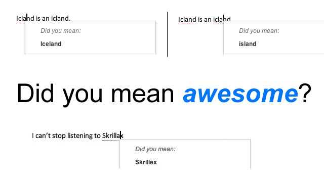
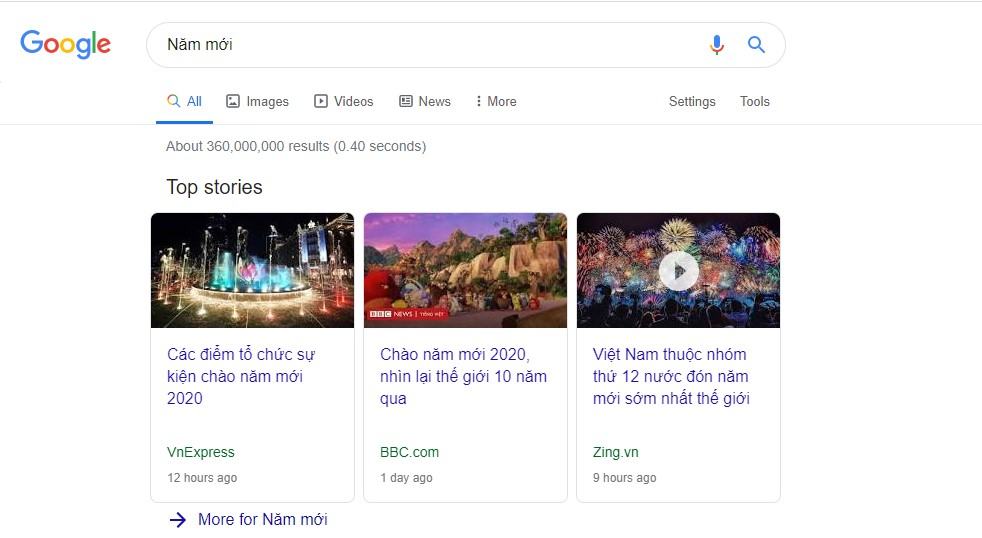
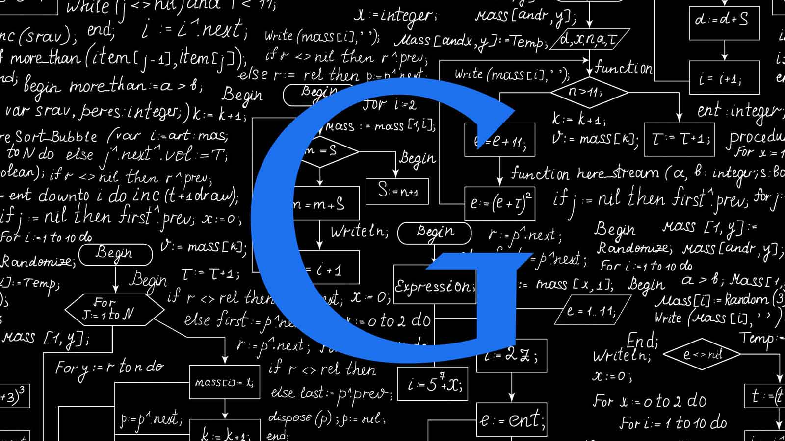
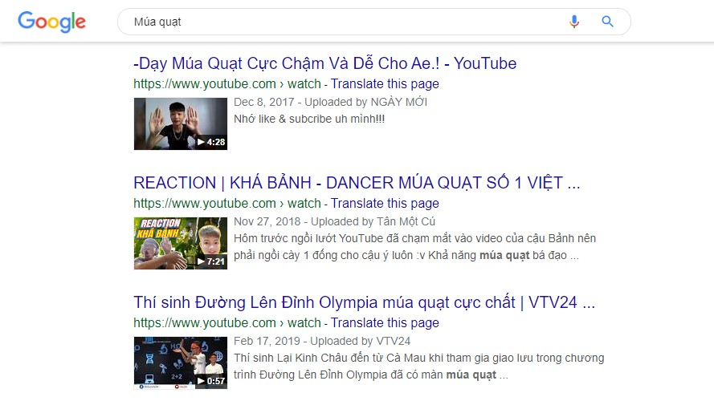
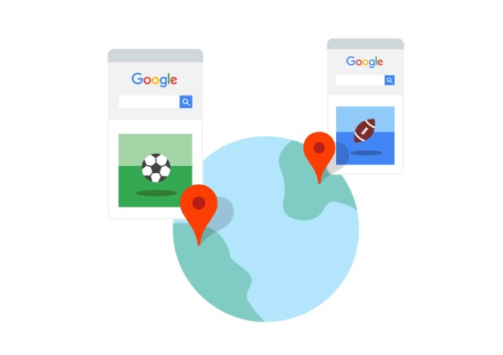

Với số lượng lớn thông tin trên web, bạn dường như không thể tìm thấy nội dung cần tìm nếu như không có sự trợ giúp sắp xếp thông tin. Thật đấy, bạn sẽ không muốn phải lướt hàng trăm trang để tìm 1 trang web phù hợp với câu hỏi của mình trong hàng tỉ kết quả có từ khóa trùng khớp với truy vấn của bạn. Do đó, hệ thống xếp hạng của Google [PageRank] được thiết kế để thực hiện điều này: sắp xếp hàng trăm tỷ trang web trong chỉ mục Tìm kiếm để cung cấp cho bạn kết quả hữu ích và phù hợp chỉ trong một tích tắc, và trình bày kết quả theo cách giúp bạn tìm thấy những gì bạn cần.
Những hệ thống xếp hạng này được tạo thành từ không chỉ một, mà là hàng loạt các thuật toán. Để cung cấp cho bạn những thông tin hữu ích nhất, thuật toán Tìm kiếm xem xét nhiều yếu tố, bao gồm cả những từ trong cụm từ tìm kiếm, mức độ liên quan và khả năng sử dụng của trang web, chuyên môn của các nguồn, vị trí và các tùy chọn cài đặt.
Để đảm bảo các thuật toán Tìm kiếm đáp ứng các tiêu chuẩn cao về mức độ liên quan và chất lượng, Google có một quy trình nghiêm ngặt bao gồm nhiều đợt thử nghiệm trực tiếp và hàng ngàn Chuyên gia đánh giá chất lượng Tìm kiếm bên ngoài đã qua đào tạo từ khắp nơi trên thế giới.
Việc hiểu được nghĩa của tìm kiếm của là điều quan trọng để trả về câu trả lời thích hợp. Vì thế để tìm các trang có thông tin liên quan, bước đầu tiên của Google Search là phân tích các từ trong truy vấn của người dùng có nghĩa gì. Google Search xây dựng các mô hình ngôn ngữ để cố giải mã những chuỗi từ và tìm ra những thứ nên tra trong chỉ mục.
Điều này bao gồm các bước trông có vẻ đơn giản như phân tích các lỗi chính tả, và mở rộng đến cả việc cố gắng hiểu loại truy vấn bạn đã nhập bằng cách áp dụng một số nghiên cứu mới nhất về hiểu ngôn ngữ tự nhiên. Ví dụ: hệ thống từ đồng nghĩa của Google giúp hệ thống tìm kiếm hiểu được người dùng đang có ý định gì, ngay cả khi một từ có nhiều định nghĩa. Hệ thống này mất 5 năm để phát triển và đã cải thiện đáng kể kết quả trong hơn 30% lượt tìm kiếm bằng các ngôn ngữ khác nhau.

Google nhắc lỗi chính tả cho người sử dụng
Google Search cũng cố hiểu bạn đang tìm kiếm loại thông tin nào. Đó là một tìm kiếm rất cụ thể hay một truy vấn rộng, tổng quát? Có những từ như "đánh giá", "ảnh" hay "giờ mở cửa" cho biết bạn cần thông tin cụ thể từ tìm kiếm hay không? Bạn có đang tìm kiếm các từ khóa thịnh hành cho thấy rằng bạn muốn nội dung được xuất bản vào ngày đó hay không? Hay bạn đang tìm kiếm một doanh nghiệp lân cận và muốn thông tin về địa phương?
Một khía cạnh đặc biệt quan trọng của việc phân loại cụm từ tìm kiếm này là phân tích xem cụm từ tìm kiếm của bạn có phải là đang tìm kiếm nội dung mới hay không. Nếu bạn đang tìm kiếm với những từ khóa thịnh hành, thuật toán về độ cập nhật của chúng tôi sẽ diễn giải cụm từ tìm kiếm của bạn như là một tín hiệu rằng các thông tin mới có thể sẽ có ích hơn những trang đã cũ. Điều này có nghĩa là khi bạn đang tìm kiếm "Năm mới” thì thông tin mới nhất “Đón năm mới 2020” sẽ mới hơn và có ích với người dùng hơn.

Thuật toán sẽ phân tích các từ ngữ để đưa ra kết quả mới nhất khi bạn sử dụng các từ thịnh hành
Tiếp theo, thuật toán tìm các trang web có thông tin khớp với truy vấn của bạn. Khi bạn tìm kiếm, ở mức độ cơ bản nhất, các thuật toán của Google sẽ tra cụm từ tìm kiếm của bạn trong chỉ mục (Index) để tìm các trang thích hợp. Các thuật toán này phân tích tần suất và vị trí các từ khóa đó xuất hiện trên một trang, liệu chúng xuất hiện trong tựa đề, tiêu đề hay nội dung
Tín hiệu cơ bản nhất cho thấy thông tin có liên quan là khi một trang web chứa những từ khóa tương tự với cụm từ tìm kiếm của bạn. Nếu những từ khóa đó xuất hiện trên trang, đặc biệt khi từ đó xuất hiện ở tiêu đề hoặc nội dung văn bản, thông tin đó có nhiều khả năng có liên quan. Ngoài việc đối sánh từ khóa đơn giản, chúng tôi sử dụng nhiều phương thức khác để đánh giá xem các kết quả tìm kiếm có liên quan tới cụm từ tìm kiếm hay không. Thuật toán biến đổi dữ liệu đó thành các tín hiệu giúp hệ thống máy học của Google Search ước tính mức độ liên quan tốt hơn.
Từ khóa là một trong những yếu tố quan trọng đối với cả người tìm kiếm và chủ sở hữu trang web
Cũng như việc đối sánh từ khóa, các thuật toán tìm các tiêu chuẩn để đo mức độ phù hợp giữa kết quả tìm kiếm tiềm năng và nội dung người dùng đang tìm kiếm. Khi bạn tìm "chó", có thể bạn không muốn một trang có từ "chó" xuất hiện hàng trăm lần. Rất có thể đó là 1 trang spam không mấy thân thiện. Google Search cố tìm hiểu xem liệu trang có cung cấp câu trả lời cho truy vấn của bạn không hay chỉ lặp lại truy vấn nhưng không kèm câu cả lời. Vì thế các thuật toán Tìm kiếm phân tích liệu trang có nội dung thích hợp hay không — chẳng hạn như ảnh, video về chó hay thậm chí danh sách các giống chó. Cuối cùng, Google kiểm tra xem trang có được viết bằng ngôn ngữ giống như câu hỏi của bạn hay không để ưu tiên các trang bằng ngôn ngữ tùy chọn của bạn.
Đối với một tìm kiếm thông thường, có hàng nghìn, thậm chí là hàng triệu trang web có chứa thông tin liên quan. Chính vì vậy, để giúp xếp các trang tốt nhất lên đầu tiên, Google có các thuật toán để đánh giá mức độ hữu ích của các trang có liên quan.

Để đưa ra kết quả tốt nhất, Google tạo ra hàng trăm các thuật toán khác nhau
Các trang web được chấm điểm bởi hàng trăm các yếu tố đánh giá khác nhau, qua đó đưa ra số điểm đánh giá. Nếu khoảng 200 yếu tố đã được Google công khai, thì hẳn phải có nhiều hơn cả thế, 200+, 300+ các yếu tố đánh giá trang web được Google giữ bí mật. Một số đánh giá có thể kể đến như:
- Độ mới mẻ của nội dung
- Số lần cụm từ tìm kiếm xuất hiện trên trang
- Trang web đó đã tồn tại bao lâu?
- Độ vững vàng của tên miền?
- Nơi xuất hiện của các từ khóa?
- Cỡ chữ của từ khóa trong trang?
- Trang web có được nhiều người truy cập khi tìm kiếm cùng chủ để với bạn?
- ...
Và yếu tố chiếm phần lớn điểm số là [PageRank]. Đây là một thuật toán nổi tiếng được tạo ra một trong những người sáng lập Google, một nhân tố quan trọng trong "công thức tính toán bí mật" của Google trong việc xếp hạng trang web. [PageRank] hoạt động tương tự như một cuộc bỏ phiếu: người có nhiều phiếu hơn, và phiếu có chất lượng hơn , sẽ có điểm số cao hơn. Khi một trang web B đơn lẻ được trang web A dẫn link tới, liên kết tới, Google xem đó là 1 phiếu bầu. Nếu trang web A có uy tín và điểm số cao, hẳn nhiên cũng sẽ đem lại nhiều điểm "bầu" cho trang B. Tương tự, nếu trang B dẫn link tới trang C, tức là B bầu cho C....
Sau cùng, các con điểm được nhân lại với nhau, trang web có điểm số cao hơn sẽ có vị trí tốt hơn trong kết quả tìm kiếm. Có vị trí cao và xuất hiện ở trang đầu của tìm kiếm, luôn là một vấn đề quan trọng đối với các chủ sở hữu web và các doanh nghiệp. Bởi lẽ, người dùng luôn muốn truy cập vào thứ đầu tiên và gần nhất mà họ thấy, và khi trang web của một doanh nghiệp được xuất hiện ở trang đầu, nó sẽ đem lại nhiều lượt truy cập, danh tiếng và thậm chí là cải thiện tình hình tài chính của doanh nghiệp, công ti đó.

Các doanh nghiệp luôn cố gắng gia tăng điểm số trang web của mình để có vị trí tốt hơn trong kết quả tìm kiếm
Tuy nhiên, cũng có một số trang bất chính cố tình nâng cao số điểm của mình bằng cách lặp lại 1 từ hàng ngàn lần hay mua các liên kết để nối với trang của họ. Các trang này đem lại trải nghiệm kém cho người dùng và có thể cung cấp thông tin sai trái, tệ hơn là gây hại cho người dùng, còn gọi là web spam. Hiểu đươc vấn đề này, Google cũng tạo ra thuật toán để xác định các trang web spam và xóa ra khỏi hệ thống vì đã vi phạm “Nguyên tắc quản trị trang web của Google”.
Nội dung trên web là vô cùng rộng lớn và luôn thay đổi. Do đó, Google sẽ liên tục làm việc, đo lường, đánh giá, nâng cao chất lượng hệ thống của họ để đảm bảo sự câng bằng giữa mức độ phù hợp và tính xác thực, chính xác của thông tin, tăng độ tin cậy cho kết quả mà bạn tìm kiếm.
Trước khi cung cấp cho bạn kết quả, Google đánh giá xem tất cả các thông tin liên quan đến nhau như thế nào: liệu chỉ có một chủ đề duy nhất trong kết quả tìm kiếm hay có nhiều chủ đề? Có phải có quá nhiều trang tập trung vào một cách diễn giải hời hợt? Google Search cố gắng cung cấp thông tin đa dạng bằng các định dạng hữu ích nhất cho vấn đề mà bạn tìm kiếm.
Những thuật toán này phân tích các tín hiệu cho biết liệu tất cả người dùng của chúng tôi có thể xem được kết quả hay không, ví dụ như trang web có hiển thị chính xác trong các trình duyệt khác nhau hay không; liệu trang web có được thiết kế cho tất cả các loại thiết bị và kích cỡ, bao gồm máy tính để bàn, máy tính bảng và điện thoại thông minh hay không; và liệu thời gian tải trang có phù hợp với người dùng có kết nối Internet chậm hay không.

Kết quả tốt nhất phải đem lại cho người dùng trải nghiệm tốt nhất
Do chủ sở hữu trang web có thể cải thiện khả năng hữu dụng của trang, Google luôn cố gắng thông báo trước cho chủ sở hữu về những thay đổi quan trọng có thể diễn ra đối với thuật toán Tìm kiếm. Ví dụ: vào tháng 1 năm 2018, Google đã thông báo 6 tháng trước khi thực hiện thay đổi, rằng thuật toán của họ sẽ bắt đầu xem xét "tốc độ trang" của trang web. Để giúp đỡ chủ sở hữu trang web, Google đã cung cấp thông tin hướng dẫn và các công cụ như PageSpeed Insights và Webpagetest.org để chủ sở hữu trang web có thể biết họ cần điều chỉnh gì (nếu cần thiết) để trang web của họ thân thiện hơn với thiết bị di động.
Tiếp đến là xem xét bối cảnh của người sử dụng.
Các thông tin chẳng hạn như vị trí của bạn, lịch sử tìm kiếm và cài đặt Tìm kiếm đều giúp Google tùy chỉnh kết quả cho phù hợp và hữu ích với bạn nhất trong khoảnh khắc đó.

...vâng, rất phù hợp
Google sử dụng quốc gia và vị trí của bạn để cung cấp nội dung thích hợp với khu vực của bạn.
Cài đặt Tìm kiếm cũng là một chỉ báo quan trọng về việc bạn có khả năng thấy kết quả nào hữu ích. Lịch sử tìm kiếm cũng đóng 1 vai trò quan trọng, cho biết bạn quan tâm đến những gì trong suốt các lượt tìm kiếm trước đây, và đưa ra các kết quả được xem là phù hợp với khẩu vị của bạn.

Google đưa ra những kết quả tốt nhất phù hợp với vị trí, đặc điểm vùng miền của bạn